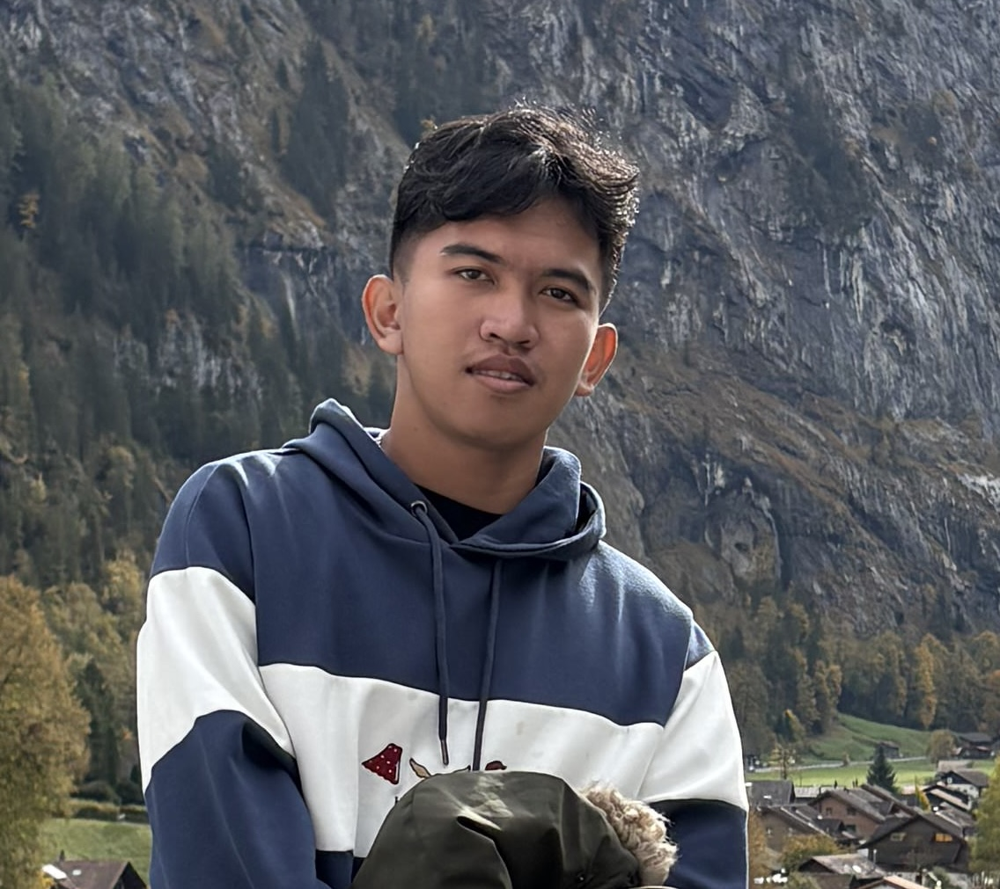
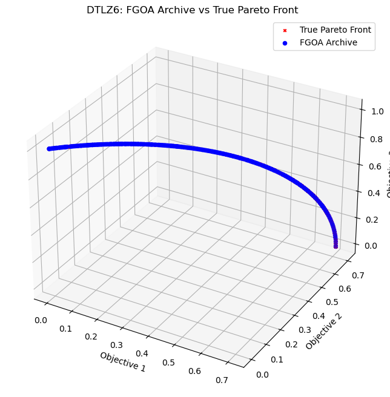
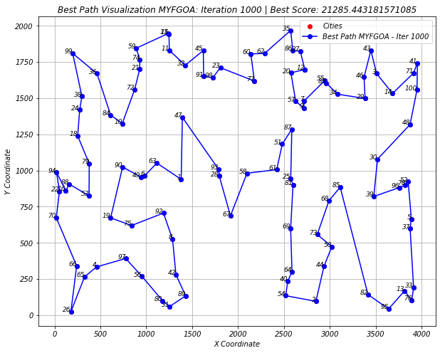
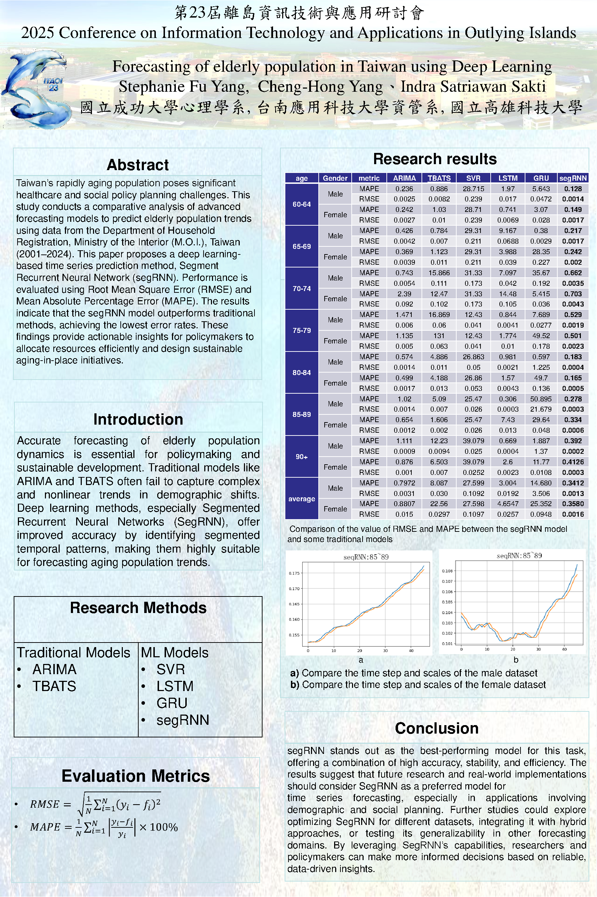

01
Optimization
FGOA, FGMOA, multi-objective optimization, feature selection and evolutionary algorithms.
ELECTRONIC ENGINEER · M.S. ELECTRICAL ENGINEERING · NKUST
I build intelligent systems at the intersection of electronics, optimization, machine learning, and cybersecurity — from research algorithms to autonomous penetration testing and real-world engineering systems.

My work combines algorithmic research with practical engineering systems — from optimization and machine learning to cybersecurity and electronic systems.
FGOA, FGMOA, multi-objective optimization, feature selection and evolutionary algorithms.
XGBoost, deep learning, feature selection, forecasting and high-dimensional modelling.
Autonomous penetration testing, reinforcement learning, NASimEmu and LLM-based supervision.
Electronic engineering background with exposure to laboratory equipment and PCB manufacturing.
Experience spanning industry internships, cross-institution research, intelligent document processing, optimization, cybersecurity and electronics manufacturing.
A selection of research and engineering projects spanning optimization, machine learning and intelligent systems.

Hyperparameter optimization for SVR using the Flying Geese Optimization Algorithm, applied to forecasting dementia patient counts in Taiwan.

Multi-objective extension of FGOA evaluated on DTLZ benchmark functions against NSGA-II and SPEA2 using hypervolume and IGD.
Python-based autonomous network attack research combining reinforcement learning and LLM-based supervision in NASimEmu.

Discrete FGOA with local-search strategies including 2-opt, 3-opt and Lin–Kernighan, evaluated on TSPLIB instances.

Deep-learning population forecasting compared against ARIMA, SARIMA, TBATS and Prophet.
My strongest combination is the ability to understand both the algorithmic side and the engineering environment where it needs to run.
Python, C/C++, MATLAB, LaTeX, Git
Scikit-learn, TensorFlow, Keras, PyTorch, XGBoost, CatBoost, feature selection
FGOA, FGMOA, MRFO, PSO, ACO, GWO, WOA, SSA, NSGA-II, SPEA2, Pymoo
Penetration testing, NASimEmu, reinforcement learning, LLM-based security research
NumPy, Pandas, SciPy, Statsmodels, Matplotlib, Plotly, NetworkX, ARIMA, SARIMA, TBATS, Prophet
OCR, LLM-based translation, structured report generation, document processing pipelines
National Kaohsiung University of Science and Technology (NKUST), Taiwan.
Research focus: swarm intelligence, metaheuristic optimization and machine learning.
National Kaohsiung University of Science and Technology (NKUST), Taiwan.
Graduated with 133 credits.
23rd Conference on Information Technology and Applications in Outlying Islands.
Bahasa Indonesia · English · 中文 · Malay · Javanese